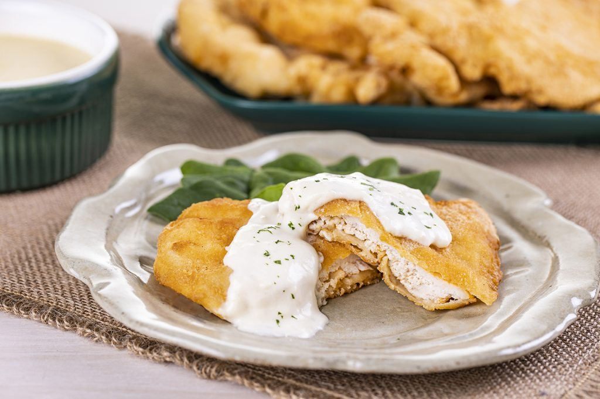

Aves · Frango
Filés de frango gelados

Ingredientes
- 6 filés de frango sem pele
- 1 litro de caldo de galinha
- 1/2 xícara de cebola picada
- 1/2 xícara de salsão picado
- 1 colher (sopa) de folhas de salsão picadas
- sal e pimenta-do-reino a gosto
- 1/2 xícara de queijo cremoso amassado
- 1/4 xícara de maionese
- 1 colher (sopa) de endro fresco
- 1/2 colher (chá) de casca ralada de limão
Modo de preparo
- Numa panela, coloque os filés, o caldo, a cebola, o salsão e as folhas. Tempere com sal e pimenta. Cozinhe até os filés ficarem macios.
- Retire os filés, deixe esfriar e congele.
- Misture o queijo cremoso, a maionese, o endro e a casca de limão até ficar homogêneo. Congele à parte.
- Na hora de servir, espalhe a mistura de queijo sobre os filés com uma faca, como uma camada de neve.
Observação
Congelamento: filés e mistura de queijo em embalagens separadas. Descongelamento: na geladeira de um dia para o outro; bata de novo a mistura de queijo antes de montar.